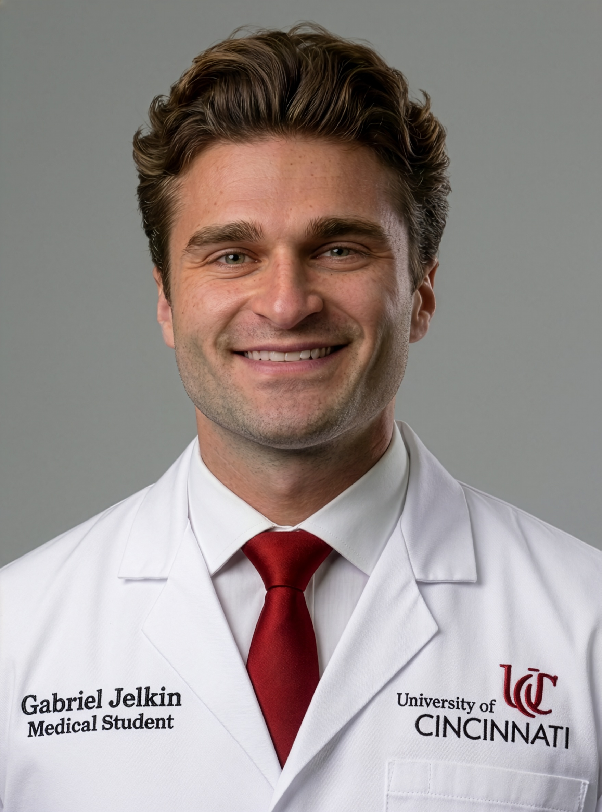

Gabriel L. Jelkin
Curriculum vitae
Cincinnati, Ohio Updated October 2026

Education
University of Cincinnati College of MedicineJuly 2024 – present
MD candidateCincinnati, OH
The Ohio State UniversityAugust 2018 – May 2022
Bachelor of Science, Neuroscience, cum laudeColumbus, OH
Honors And Awards
UCCOM Medical Student Scholars ProgramDecember 2024 – present
Summer Research Fellowship, Department of Psychiatry and Behavioral Neuroscience (June 2025)
Nu Rho Psi National Honor Society in NeuroscienceJanuary 2022
Research Experience
Spine Outcomes and Aging LaboratoryNovember 2024 – present
Student ResearcherUniversity of Cincinnati College of Medicine
PI: Owoicho Adogwa, MD, MPH
Design and conduct propensity-matched retrospective cohort studies using the TriNetX research network on perioperative pharmacology, genitourinary complications, and hip degeneration after cervical and lumbar spine surgery
First author on studies of androgen replacement therapy, surgical approach and genitourinary dysfunction, and lumbar fusion and hip degeneration
Conducted a systematic review and meta-analysis of malnutrition and spine surgery outcomes from study design through full statistical analysis and manuscript preparation
Contribute to subgroup analyses of a randomized trial of genotype-guided versus standard pain management in spine surgery
Named Student Research Director in March 2026 (see Research Leadership and Mentorship)
Department of NeurosurgeryNovember 2024 – present
Student ResearcherUniversity of Cincinnati College of Medicine
PI: Laura B. Ngwenya, MD, PhD
Conduct retrospective neurotrauma research evaluating institutional protocols for delayed diagnostic cerebral angiography and antibiotic prophylaxis in civilian penetrating traumatic brain injury
Contribute to evaluation of the Nelson criteria against historical admission practice in mild traumatic brain injury
Abstract clinical data from the institutional electronic health record (Epic)
First author of a case report and scoping review of intracranial Candida auris infection
Department of NeurosurgeryNovember 2024 – present
Student ResearcherUniversity of Cincinnati College of Medicine
PI: Charles J. Prestigiacomo, MD
Contribute to clinical outcomes research in cerebrovascular and endovascular neurosurgery
Conduct historical research on the evolution of surgical education and neurosurgical practice
Co-led archival research on the history of the University of Cincinnati surgical amphitheater using original lectures, blueprints, photographs, institutional records, and first-person accounts
Contributed to a historical review of ketamine in neurosurgery published in the Journal of Neurosurgery
Department of Psychiatry and Behavioral NeuroscienceJanuary 2025 – present
Student ResearcherUniversity of Cincinnati College of Medicine
PI: Henry A. Nasrallah, MD
Independently lead a comprehensive review of neurosurgical interventions for treatment-refractory obsessive-compulsive disorder, spanning historical psychosurgery, stereotactic lesioning, deep brain stimulation, MR-guided focused ultrasound, and laser interstitial thermal therapy
Supported by a Medical Student Scholars Program Summer Research Fellowship (2025)
Research Leadership And Mentorship
Spine Outcomes and Aging LaboratoryMarch 2026 – present
Student Research DirectorUniversity of Cincinnati College of Medicine
PI: Owoicho Adogwa, MD, MPH
Direct a medical student research team and oversee the lab’s research from project and authorship assignment through abstract, presentation, and manuscript submission
Run lab meetings, track submission deadlines, and review every abstract and manuscript before it goes to the PI
Extract and analyze data from TriNetX and Epic; train lab members in study design, statistical analysis, coding, and scientific writing
Mentor trainees through national meeting abstracts and presentations, and connect them with clinical shadowing and professional networking opportunities
Peer-Reviewed Publications
- Jelkin G, Kaghazchi A, Karnati J, Ashraf A, Lunasco L, Abid S, Fitzpatrick D, Assi JY, Ranganathan S, Wallace M, Cheng J, Adogwa O. Influence of surgical approach on sexual dysfunction following single-level lumbar fusion in men: a propensity-matched analysis. J Clin Neurosci. 2026;154:112314. doi:10.1016/j.jocn.2026.112314 (Joint first authors: Jelkin G and Kaghazchi A.)
- Johnson MD, Ivey N, Robles Solivan J, Jelkin G, Daniel M, Hoz SS, Prestigiacomo CJ, Ngwenya LB. Utility of delayed diagnostic cerebral angiography in penetrating traumatic brain injury. J Neurosurg. In production.
- Ashraf A, Kaghazchi A, Karnati J, Jelkin G, Abid S, Wu A, Ranganathan S, Lunasco L, Moon E, Ashraf M, Wallace M, Cheng J, Adogwa O. Preoperative proton pump inhibitor prescriptions in patients with GERD are associated with increased rates of pseudoarthrosis and composite complications following multilevel posterior lumbar instrumentation: a propensity score–matched analysis. J Neurosurg. In production.
- Ashraf A, Abid S, Kaghazchi A, Karnati J, Jelkin G, Lunasco L, Ranganathan S, Wallace M, Cheng J, Adogwa O. The impact of teaching hospital status in posterior scoliosis surgery for adolescent idiopathic scoliosis: a propensity matched analysis. Spine Open. In production.
- Jelkin GL, Kaghazchi A, Karnati J, Ashraf A, Lunasco L, Abid S, Fitzpatrick D, Assi JY, Ranganathan S, Wallace M, Cheng J, Adogwa O. Urinary dysfunction following single-level lumbar fusion in men: a propensity-matched analysis of surgical approach. Surg Neurol Int. 2026;17:460. doi:10.25259/SNI_672_2026
- Sinclair AL, Jelkin G, Zucca B, Prestigiacomo CJ, Ngwenya LB. Ketamine in neurosurgery: a historical perspective. J Neurosurg. Published online July 24, 2026. doi:10.3171/2026.2.JNS251845
- Ashraf A, Lunasco L, Karnati J, Kaghazchi A, Ranganathan S, Jelkin G, Abid S, Moon E, Ashraf M, Wallace M, Cheng J, Adogwa O. The impact of social deprivation risk factors on rates of short and long-term postoperative outcomes following single and multilevel posterior lumbar instrumentation: a propensity score matched analysis. Spine J. Published online July 16, 2026. doi:10.1016/j.spinee.2026.07.010
- Karnati J, Wu A, Kaghazchi A, Ashraf A, Jelkin G, Ranganathan S, Abid S, Lunasco L, Shankar S, Wallace M, Cheng J, Adogwa O. Does postoperative gabapentinoid prescription reduce chronic opioid use following short-segment lumbar instrumentation? J Neurosurg Spine. 2026;45(3):413-422. doi:10.3171/2026.2.SPINE25802
- Ashraf A, Kaghazchi A, Jelkin G, Karnati J, Lunasco L, Abid S, Ashraf M, Ranganathan S, Wallace M, Cheng J, Adogwa O. Malnutrition and adverse outcomes after spine surgery: a systematic review and meta-analysis. Spine J. 2026;26(10):2045-2074. doi:10.1016/j.spinee.2026.06.015
- Karnati J, Kaghazchi A, Ashraf A, Lunasco L, Jelkin G, Abid S, Wu A, Ranganathan S, Wallace M, Ashraf M, Cheng J, Adogwa O. The association between teaching hospital status and postoperative outcomes among adults undergoing long-segment posterior lumbar instrumentation. Spine J. 2026;26(8):1488-1496. doi:10.1016/j.spinee.2026.03.005
- Karnati J, Ranganathan S, Tao X, Kaghazchi A, Abid S, Wu A, Ashraf A, Jelkin G, Lunasco L, Shankar S, Wallace M, Cheng J, Adogwa O. Chronic opioid prescription rates following long-segment lumbar instrumentation: a comparison of academic and nonacademic centers. N Am Spine Soc J. 2026;26:100864. doi:10.1016/j.xnsj.2026.100864
- Jelkin GL, Heineman AL, Beckett HT, Goddard CM, Ngwenya LB. Intracranial Candida auris infection: a case report and scoping review. World Neurosurg. 2026;206:124775. doi:10.1016/j.wneu.2025.124775
- Karnati J, Kaghazchi A, Ashraf A, Tao X, Wu A, Ranganathan S, Jelkin G, Abid S, Lunasco L, Shankar S, Ashraf M, Wallace M, Cheng J, Adogwa O. The impact of teaching hospital status on postoperative outcomes among adults undergoing short segment lumbar instrumentation. Spine (Phila Pa 1976). Published online November 18, 2025. doi:10.1097/BRS.0000000000005572
- Ashraf A, Karnati J, Abid S, Tao X, Kaghazchi A, Wu A, Ranganathan S, Lunasco L, Jelkin G, Moon E, Ashraf M, Shankar S, Hoffman H, Wallace M, Cheng J, Adogwa O. Donepezil treatment does not improve postoperative delirium, medical, or surgical outcomes following lumbar spine surgery: a propensity-matched analysis. Spine J. 2026;26(5):923-931. doi:10.1016/j.spinee.2025.10.016
- Karnati J, Wu A, Tao X, Kaghazchi A, Ashraf A, Jelkin G, Ranganathan S, Abid S, Lunasco L, Shankar S, Wallace M, Cheng J, Adogwa O. Postoperative gabapentinoid use reduces long-term opioid reliance after long-segment lumbar instrumentation: a retrospective propensity-matched analysis. Spine (Phila Pa 1976). 2026;51(13):952-959. doi:10.1097/BRS.0000000000005480
- Karnati J, Kaghazchi A, Jelkin G, Ashraf A, Tao X, Wu A, Ranganathan S, Abid S, Lunasco L, Shankar S, Ashraf M, Wallace M, Cheng J, Adogwa O. Impact of teaching hospital status on postoperative outcomes following posterior cervical fusion/instrumentation. Surg Neurol Int. 2025;16:329. doi:10.25259/SNI_681_2025
- Karnati J, Abid S, Ashraf A, Lunasco L, Kaghazchi A, Wu A, Tao X, Jelkin G, Ranganathan S, Shankar S, Wallace M, Cheng J, Adogwa O. Chronic opioid prescription rates in older adults: a comparison of academic and nonacademic centers following long-segment lumbar instrumentation. Surg Neurol Int. 2025;16:282. doi:10.25259/SNI_486_2025
Published Abstracts
- Kaghazchi A, Abid S, Karnati J, Fitzpatrick D, Ashraf A, Jelkin G, Lunasco L, Assi JY, Ranganathan S, Wallace M, Cheng J, Adogwa O. Does perioperative ketamine modify long-term opioid dependence in chronic opioid users undergoing lumbar spine surgery? In: Lumbar Spine Research Society 19th Annual Scientific Meeting Abstracts. J Neurosurg Spine. 2026;44(5):1-107. Paper 36. doi:10.3171/2026.5.LSRS2025abstracts
- Karnati J, Wu A, Tao X, Kaghazchi A, Ashraf A, Jelkin G, Ranganathan S, Abid S, Lunasco L, Shankar S, Wallace M, Cheng J, Adogwa O. 279 Does postoperative gabapentinoid prescription reduce chronic opiate use following long-segment lumbar instrumentation? Neurosurgery. 2026;72(Suppl 1). doi:10.1227/neu.0000000000003964_279
- Karnati J, Ashraf A, Lunasco L, Tao X, Wu A, Kaghazchi A, Ranganathan S, Abid S, Jelkin G, Shankar S, Wallace M, Cheng J, Adogwa O. 424 Impact of African American race on chronic postoperative opiate use following long-segment posterior lumbar instrumentation. Neurosurgery. 2026;72(Suppl 1). doi:10.1227/neu.0000000000003964_424
Other Publications
- Kaghazchi A, Karnati J, Ashraf A, Jelkin G, Adogwa O. Response to letter to the editor regarding “The association between teaching hospital status and postoperative outcomes among adults undergoing long-segment posterior lumbar instrumentation.” Spine J. 2026;26(9):1889-1890. doi:10.1016/j.spinee.2026.04.032
- Kaghazchi A, Karnati J, Ashraf A, Jelkin G, Adogwa O. Response to letter to the editor regarding “The impact of teaching hospital status on postoperative outcomes among adults undergoing short segment lumbar instrumentation.” Spine (Phila Pa 1976). 2026;51(14):E373. doi:10.1097/BRS.0000000000005736
- Jelkin G. Thin Days [poem]. Mentis: Original Creative Works from the University of Cincinnati College of Medicine. 2025-2026;17:54.
Podium Presentations
As of October 1, 2026, future-dated presentations are upcoming.
† Presented by G. Jelkin
- Kaghazchi A, Lunasco L, Ashraf A, Karnati J, Jelkin G, Abid S, Fitzpatrick D, Assi JY, Ranganathan S, Cheng J, Adogwa O. Neurocognitive Safety of Postoperative Baclofen and Cyclobenzaprine Following Cervical Spine Surgery: A Propensity-Matched Analysis. Podium presentation at: Cervical Spine Research Society Annual Meeting; December 2-5, 2026; Austin, TX.†
- Kaghazchi A, Karnati J, Ashraf A, Jelkin G, Abid S, Lunasco L, Assi JY, Fitzpatrick D, Ranganathan S, Wallace M, Cheng J, Adogwa O. Age Subgroup Analysis of a Genotype-Guided Versus Standard-of-Care Pain Management Randomized Trial in Spine Surgery Patients. (1) Podium presentation at: AANS Annual Meeting; May 1-4, 2026; San Antonio, TX. (2) Podium presentation at: CNS Annual Meeting; October 31-November 4, 2026; Washington, DC.†
- Kaghazchi A, Abid S, Ashraf A, Karnati J, Fitzpatrick D, Jelkin G, Lunasco L, Assi JY, Ranganathan S, Wallace M, Cheng J, Adogwa O. The Impact of Perioperative Ketamine on Chronic Postoperative Opioid Prescription Rates in Opioid-Naïve Patients Undergoing Lumbar Instrumentation. (1) Poster presentation at: University of Cincinnati Department of Neurosurgery Research Symposium; June 18, 2026; Cincinnati, OH.† (2) Podium presentation at: CNS Annual Meeting; October 31-November 4, 2026; Washington, DC.†
- Kaghazchi A, Karnati J, Ashraf A, Jelkin G, Abid S, Lunasco L, Assi JY, Fitzpatrick D, Ranganathan S, Wallace M, Cheng J, Adogwa O. CYP Metabolism Phenotype Subgroup Analysis of a Genotype-Guided Versus Standard Pain Management Randomized Trial in Spine Surgery Patients. (1) Podium presentation at: North American Spine Society Annual Meeting; October 14-17, 2026; San Antonio, TX. (2) Poster presentation at: CNS Annual Meeting; October 31-November 4, 2026; Washington, DC.†
- Kaghazchi A, Abid S, Karnati J, Fitzpatrick D, Ashraf A, Jelkin G, Lunasco L, Assi JY, Ranganathan S, Wallace M, Cheng J, Adogwa O. Does Perioperative Ketamine Modify Long-Term Opioid Dependence in Chronic Opioid Users Undergoing Lumbar Spine Surgery? Podium presentation at: Lumbar Spine Research Society Annual Meeting; May 14-15, 2026; Chicago, IL.†
- Jelkin G, Kaghazchi A, Karnati J, Ashraf A, Tao X, Abid S, Wu A, Ranganathan S, Lunasco L, Shankar S, Wallace M, Cheng J, Adogwa O. Impact of African American Race on Chronic Postoperative Opioid Use Following Short-Segment Lumbar Instrumentation. (1) Poster presentation at: CNS Annual Meeting; October 11-15, 2025; Los Angeles, CA. (2) Podium presentation at: AANS Annual Meeting; May 1-4, 2026; San Antonio, TX.†
- Kaghazchi A, Karnati J, Jelkin G, Abid S, Lunasco L, Ranganathan S, Ashraf M, Wallace M, Cheng J, Adogwa O. Thoracolumbar Subgroup Analysis of the Genotype-Guided Versus Standard of Care Pain Management Randomized Trial in Spine Surgery Patients. Podium presentation at: AANS Annual Meeting; May 1-4, 2026; San Antonio, TX.†
- Ashraf A, Kaghazchi A, Karnati J, Moon E, Jelkin G, Abid S, Lunasco L, Ashraf M, Ranganathan S, Wallace M, Cheng J, Adogwa O. Early Postoperative Gabapentinoid Use Reduces Long-Term Opioid Reliance After 7-12 Level Posterior Spinal Fusion for Adolescent Idiopathic Scoliosis: A Propensity-Matched Analysis. Podium presentation at: AANS Annual Meeting; May 1-4, 2026; San Antonio, TX.
- Ashraf A, Kaghazchi A, Karnati J, Moon E, Jelkin G, Abid S, Lunasco L, Ashraf M, Ranganathan S, Wallace M, Cheng J, Adogwa O. Early Postoperative Gabapentinoid Use Increases Long-Term Opioid Reliance After Single-Level Posterior Lumbar Instrumentation in Opioid- and Gabapentinoid-Naïve Patients: A Propensity-Matched Analysis. Podium presentation at: AANS Annual Meeting; May 1-4, 2026; San Antonio, TX.
- Karnati J, Wu A, Kaghazchi A, Ashraf A, Jelkin G, Ranganathan S, Abid S, Lunasco L, Shankar S, Wallace M, Cheng J, Adogwa O. Does Postoperative Gabapentinoid Prescription Reduce Chronic Opioid Use Following Short-Segment Lumbar Instrumentation? (1) Poster presentation at: CNS Annual Meeting; October 11-15, 2025; Los Angeles, CA. (2) Poster presentation at: AANS/CNS Spine Summit; February 26-March 1, 2026; Phoenix, AZ.† (3) Podium presentation at: AANS Annual Meeting; May 1-4, 2026; San Antonio, TX.
- Ashraf A, Karnati J, Abid S, Tao X, Kaghazchi A, Wu A, Ranganathan S, Lunasco L, Jelkin G, Moon E, Ashraf M, Shankar S, Wallace M, Cheng J, Adogwa O. Proton Pump Inhibitor Use for Treatment of GERD Not Associated With Increased Rates of Pseudoarthrosis or Mechanical Failure Following Multi-Level Posterior Lumbar Instrumentation: A Propensity Score Matched Analysis. (1) Poster presentation at: University of Cincinnati College of Medicine Research & Service Symposium; November 5, 2025; Cincinnati, OH. (2) Podium presentation at: AANS/CNS Spine Summit; February 26-March 1, 2026; Phoenix, AZ.†
- Karnati J, Wu A, Tao X, Kaghazchi A, Ashraf A, Jelkin G, Ranganathan S, Abid S, Lunasco L, Shankar S, Wallace M, Cheng J, Adogwa O. Does Postoperative Gabapentinoid Prescription Reduce Chronic Opiate Use Following Long-Segment Lumbar Instrumentation? Podium presentation at: CNS Annual Meeting; October 11-15, 2025; Los Angeles, CA.
- Karnati J, Ashraf A, Lunasco L, Tao X, Wu A, Kaghazchi A, Ranganathan S, Abid S, Jelkin G, Shankar S, Wallace M, Cheng J, Adogwa O. Impact of African American Race on Chronic Postoperative Opiate Use Following Long-Segment Posterior Lumbar Instrumentation. (1) Poster presentation at: University of Cincinnati Department of Neurosurgery Research Symposium; June 20, 2025; Cincinnati, OH. (2) Podium presentation at: CNS Annual Meeting; October 11-15, 2025; Los Angeles, CA.
Poster Presentations
As of October 1, 2026, future-dated presentations are upcoming.
† Presented by G. Jelkin
- Jelkin G, Kaghazchi A, Ashraf A, Karnati J, Lunasco L, Abid S, Fitzpatrick D, Assi JY, Ranganathan S, Cheng J, Adogwa O. Influence of Androgen Replacement Therapy on Postoperative Outcomes Following Multi-Level Lumbar Instrumentation: A Propensity-Matched Analysis. Poster presentation at: CNS Annual Meeting; October 31-November 4, 2026; Washington, DC.†
- Jelkin G, Kaghazchi A, Ashraf A, Karnati J, Lunasco L, Abid S, Fitzpatrick D, Assi JY, Ranganathan S, Cheng J, Adogwa O. Association Between Androgen Replacement Therapy and Postoperative Outcomes in Men Undergoing Single-Level Lumbar Instrumentation. Poster presentation at: CNS Annual Meeting; October 31-November 4, 2026; Washington, DC.†
- Jelkin G, Kaghazchi A, Ashraf A, Karnati J, Lunasco L, Abid S, Fitzpatrick D, Assi JY, Ranganathan S, Cheng J, Adogwa O. Impact of Androgen Replacement Therapy on Postoperative Outcomes Following Anterior Cervical Discectomy and Fusion. Poster presentation at: CNS Annual Meeting; October 31-November 4, 2026; Washington, DC.†
- Jelkin G, Kaghazchi A, Ashraf A, Karnati J, Lunasco L, Abid S, Fitzpatrick D, Assi JY, Ranganathan S, Cheng J, Adogwa O. Androgen Replacement Therapy and Postoperative Outcomes After Posterior Cervical Instrumentation: A Propensity-Matched Cohort Analysis. Poster presentation at: CNS Annual Meeting; October 31-November 4, 2026; Washington, DC.†
- Jelkin G, Kaghazchi A, Ashraf A, Fitzpatrick D, Assi JY, Lunasco L, Abid S, Ranganathan S, Cheng J, Adogwa O. Does Adding Short-Segment Fusion to Lumbar Decompression Increase Postoperative Hip Degeneration Risk? Poster presentation at: CNS Annual Meeting; October 31-November 4, 2026; Washington, DC.†
- Jelkin G, Kaghazchi A, Ashraf A, Fitzpatrick D, Assi JY, Lunasco L, Abid S, Ranganathan S, Cheng J, Adogwa O. Does Lumbar Fusion Extent Influence Postoperative Hip Degeneration? A Propensity-Matched Analysis of Long- Versus Short-Segment Fusion. Poster presentation at: CNS Annual Meeting; October 31-November 4, 2026; Washington, DC.†
- Kaghazchi A, Jelkin G, Fitzpatrick D, Ashraf A, Karnati J, Lunasco L, Abid S, Assi JY, Ranganathan S, Cheng J, Adogwa O. Perioperative Gabapentinoid Use and Postoperative Cognitive and Medical Outcomes Following Lumbar Spine Surgery: An Age-Stratified Analysis. Poster presentation at: CNS Annual Meeting; October 31-November 4, 2026; Washington, DC.†
- Kaghazchi A, Jelkin G, Ashraf A, Karnati J, Lunasco L, Abid S, Fitzpatrick D, Assi JY, Ranganathan S, Cheng J, Adogwa O. Neurocognitive Safety of Postoperative Baclofen and Cyclobenzaprine Following Lumbar Spine Surgery: A Propensity-Matched Analysis. Poster presentation at: CNS Annual Meeting; October 31-November 4, 2026; Washington, DC.†
- Kaghazchi A, Lunasco L, Ashraf A, Karnati J, Assi JY, Abid S, Jelkin G, Fitzpatrick D, Ranganathan S, Cheng J, Adogwa O. Perioperative Ketamine Reduces Chronic Opioid Use in Opioid-Naïve Patients Following Cervical Spine Surgery: A Propensity-Matched Analysis. (1) Poster presentation at: University of Cincinnati Department of Neurosurgery Research Symposium; June 18, 2026; Cincinnati, OH. (2) Poster presentation at: CNS Annual Meeting; October 31-November 4, 2026; Washington, DC.†
- Kaghazchi A, Abid S, Karnati J, Ashraf A, Fitzpatrick D, Jelkin G, Lunasco L, Assi JY, Ranganathan S, Wallace M, Cheng J, Adogwa O. The Impact of Perioperative Ketamine on Postoperative Delirium and Long-Term Cognitive Decline Following Lumbar Spine Surgery. (1) Poster presentation at: University of Cincinnati Department of Neurosurgery Research Symposium; June 18, 2026; Cincinnati, OH. (2) Poster presentation at: CNS Annual Meeting; October 31-November 4, 2026; Washington, DC.†
- Kaghazchi A, Karnati J, Ashraf A, Jelkin G, Abid S, Lunasco L, Assi JY, Fitzpatrick D, Ranganathan S, Wallace M, Cheng J, Adogwa O. Socioeconomic Class Subgroup Analysis of a Genotype-Guided Versus Standard of Care Pain Management Randomized Trial in Spine Surgery Patients. (1) Poster presentation at: AANS Annual Meeting; May 1-4, 2026; San Antonio, TX. (2) Poster presentation at: CNS Annual Meeting; October 31-November 4, 2026; Washington, DC.†
- Kaghazchi A, Karnati J, Ashraf A, Jelkin G, Abid S, Lunasco L, Assi JY, Fitzpatrick D, Ranganathan S, Wallace M, Cheng J, Adogwa O. Sex Subgroup Analysis of a Genotype-Guided Versus Standard of Care Pain Management Randomized Trial in Spine Surgery Patients. Poster presentation at: CNS Annual Meeting; October 31-November 4, 2026; Washington, DC.†
- Kaghazchi A, Lunasco L, Karnati J, Ashraf A, Assi JY, Abid S, Jelkin G, Fitzpatrick D, Ranganathan S, Cheng J, Adogwa O. Perioperative Ketamine Does Not Increase the Risk of Postoperative Delirium or Long-Term Cognitive Impairment Following Cervical Spine Surgery. Poster presentation at: CNS Annual Meeting; October 31-November 4, 2026; Washington, DC.†
- Kaghazchi A, Lunasco L, Karnati J, Ashraf A, Assi JY, Abid S, Jelkin G, Fitzpatrick D, Ranganathan S, Cheng J, Adogwa O. Perioperative Ketamine and Long-Term Opioid Use After Cervical Spine Surgery in Chronic Opioid Users: A Propensity-Matched Analysis. Poster presentation at: CNS Annual Meeting; October 31-November 4, 2026; Washington, DC.†
- Warshak AM, Jelkin GL, Wiesner S, Pritts TA, Prestigiacomo CJ. From Operating Room to Educational Landmark: The Evolution of the Surgical Amphitheater at the University of Cincinnati. Poster presentation at: American College of Surgeons Clinical Congress; September 27, 2026; Washington, DC.†
- Jelkin G, Kaghazchi A, Ashraf A, Karnati J, Fitzpatrick D, Assi JY, Lunasco L, Abid S, Ranganathan S, Cheng J, Adogwa O. Androgen Replacement Therapy and Postoperative Outcomes Following Cervical Fusion: A Propensity-Matched Analysis. (1) Poster presentation at: University of Cincinnati Department of Neurosurgery Research Symposium; June 18, 2026; Cincinnati, OH.† (2) Poster presentation at: Ohio State Neurosurgical Society Annual Meeting; August 21-22, 2026; Columbus, OH.†
- Jelkin G, Kaghazchi A, Ashraf A, Karnati J, Fitzpatrick D, Assi JY, Lunasco L, Abid S, Ranganathan S, Cheng J, Adogwa O. Association Between Perioperative Gabapentinoid Use and Long-Term Postoperative Cognitive Impairment Following Cervical Spine Surgery. (1) Poster presentation at: University of Cincinnati Department of Neurosurgery Research Symposium; June 18, 2026; Cincinnati, OH. (2) Poster presentation at: Ohio State Neurosurgical Society Annual Meeting; August 21-22, 2026; Columbus, OH.†
- Johnson MD, Ivey N, Robles Solivan J, Jelkin G, Daniel M, Prestigiacomo CJ, Ngwenya LB. Utility of Delayed Diagnostic Cerebral Angiography in Penetrating Traumatic Brain Injury. (1) Poster presentation at: University of Cincinnati Department of Neurosurgery Research Symposium; June 18, 2026; Cincinnati, OH. (2) Poster presentation at: Ohio State Neurosurgical Society Annual Meeting; August 21-22, 2026; Columbus, OH.
- Coffin M, Jelkin G, Makley A, Kreitzer N, Virojanapa J, Ngwenya LB. Agreement Between Nelson Criteria Classification and Historical Admission Practice in Mild Traumatic Brain Injury: A Retrospective Evaluation. Poster presentation at: University of Cincinnati Department of Neurosurgery Research Symposium; June 18, 2026; Cincinnati, OH.
- Ivey N, Johnson MD, Robles Solivan J, Jelkin G, Daniel M, Prestigiacomo CJ, Ngwenya LB. Assessing Outcomes of an Institutional Protocol for Antibiotic Prophylaxis for Civilian Cranial Gunshot Wounds. (1) Poster presentation at: National Neurotrauma Society Annual Symposium; June 14-17, 2026; Milwaukee, WI. (2) Poster presentation at: University of Cincinnati Department of Neurosurgery Research Symposium; June 18, 2026; Cincinnati, OH.
- Ashraf A, Lunasco L, Karnati J, Kaghazchi A, Ranganathan S, Jelkin G, Abid S, Moon E, Ashraf M, Wallace M, Cheng J, Adogwa O. The Impact of Social Deprivation Risk Factors on Rates of Short and Long-Term Postoperative Outcomes Following Single and Multi-Level Posterior Lumbar Instrumentation. (1) Poster presentation at: University of Cincinnati College of Medicine Research & Service Symposium; November 5, 2025; Cincinnati, OH. (2) Poster presentation at: AANS Annual Meeting; May 1-4, 2026; San Antonio, TX.
- Karnati J, Kaghazchi A, Ashraf A, Tao X, Wu A, Ranganathan S, Jelkin G, Abid S, Lunasco L, Shankar S, Ashraf M, Wallace M, Cheng J, Adogwa O. The Impact of Teaching Hospital Status on Postoperative Outcomes Among Adults Undergoing Short Segment Lumbar Instrumentation. (1) Poster presentation at: CNS Annual Meeting; October 11-15, 2025; Los Angeles, CA. (2) Poster presentation at: AANS/CNS Spine Summit; February 26-March 1, 2026; Phoenix, AZ.† (3) Poster presentation at: AANS Annual Meeting; May 1-4, 2026; San Antonio, TX.
- Ashraf A, Kaghazchi A, Karnati J, Moon E, Jelkin G, Abid S, Lunasco L, Ashraf M, Ranganathan S, Wallace M, Cheng J, Adogwa O. Postoperative Gabapentinoid Use Has Limited Impact on Long-Term Opioid Reliance After 13 or Greater Level Posterior Spinal Fusion for Adolescent Idiopathic Scoliosis: A Propensity-Matched Analysis. (1) Poster presentation at: AANS/CNS Spine Summit; February 26-March 1, 2026; Phoenix, AZ.† (2) Poster presentation at: AANS Annual Meeting; May 1-4, 2026; San Antonio, TX.
- Ashraf A, Kaghazchi A, Karnati J, Moon E, Jelkin G, Abid S, Lunasco L, Ashraf M, Ranganathan S, Wallace M, Cheng J, Adogwa O. Postoperative Gabapentinoid Use Increases Long-Term Opioid Reliance After 3-6 Level Posterior Lumbar Instrumentation in Opioid- and Gabapentinoid-Naïve Patients: A Propensity-Matched Analysis. Poster presentation at: AANS Annual Meeting; May 1-4, 2026; San Antonio, TX.
- Kaghazchi A, Karnati J, Ashraf A, Ranganathan S, Tao X, Abid S, Wu A, Jelkin G, Lunasco L, Shankar S, Wallace M, Cheng J, Adogwa O. Chronic Opioid Prescription Rates Following Short-Segment Lumbar Instrumentation: A Comparison of Academic and Non-Academic Centers. Poster presentation at: AANS Annual Meeting; May 1-4, 2026; San Antonio, TX.
- Kaghazchi A, Karnati J, Jelkin G, Abid S, Lunasco L, Ranganathan S, Wallace M, Cheng J, Adogwa O. Perioperative Ketamine Use and Postoperative Delirium and Cognitive Decline in Long Segment Lumbar Spine Surgery: A Propensity-Matched Analysis. Poster presentation at: AANS Annual Meeting; May 1-4, 2026; San Antonio, TX.
- Jelkin G, Nasrallah HA. Neurosurgical Interventions for Treatment-Refractory OCD: Past, Present, and Future. (1) Poster presentation at: CNS Annual Meeting; October 11-15, 2025; Los Angeles, CA.† (2) Poster presentation at: University of Cincinnati College of Medicine Research & Service Symposium; November 5, 2025; Cincinnati, OH.† (3) Poster presentation at: Ohio Psychiatric Physicians Association Annual Meeting; April 18-19, 2026; Columbus, OH.†
- Jelkin G, Ashraf A, Karnati J, Kaghazchi A, Lunasco L, Abid S, Ranganathan S, Wallace M, Cheng J, Adogwa O. Urinary and Sexual Complications in Women Following Multi-Level Lumbar Instrumentation: The Impact of Surgical Approach. Poster presentation at: AANS/CNS Spine Summit; February 26-March 1, 2026; Phoenix, AZ.†
- Ashraf A, Karnati J, Abid S, Tao X, Kaghazchi A, Wu A, Ranganathan S, Lunasco L, Jelkin G, Moon E, Ashraf M, Shankar S, Hoffman H, Wallace M, Cheng J, Adogwa O. Donepezil Treatment Does Not Improve Postoperative Delirium, Medical, or Surgical Outcomes Following Lumbar Spine Surgery: A Propensity-Matched Analysis. (1) Poster presentation at: CNS Annual Meeting; October 11-15, 2025; Los Angeles, CA. (2) Poster presentation at: AANS/CNS Spine Summit; February 26-March 1, 2026; Phoenix, AZ.†
- Lunasco L, Ashraf A, Kaghazchi A, Jelkin G, Karnati J, Abid S, Ashraf M, Ranganathan S, Wallace M, Cheng J, Adogwa O. Malnutrition and Adverse Outcomes After Spine Surgery: A Systematic Review and Meta-Analysis. Poster presentation at: University of Cincinnati College of Medicine Research & Service Symposium; November 5, 2025; Cincinnati, OH.†
- Jelkin G, Ashraf A, Karnati J, Kaghazchi A, Abid S, Lunasco L, Ranganathan S, Wallace M, Cheng J, Adogwa O. Comparative Analysis of Urinary and Sexual Dysfunction in Men Following Anterior Versus Posterior Lumbar Instrumentation. (1) Poster presentation at: American Medical Association Research Challenge; October 22-23, 2025; Virtual.† (2) Poster presentation at: University of Cincinnati College of Medicine Research & Service Symposium; November 5, 2025; Cincinnati, OH.†
- Karnati J, Kaghazchi A, Ashraf A, Tao X, Wu A, Ranganathan S, Jelkin G, Abid S, Lunasco L, Shankar S, Ashraf M, Wallace M, Cheng J, Adogwa O. The Impact of Teaching Hospital Status on Postoperative Outcomes Among Adults Undergoing Long-Segment Posterior Lumbar Instrumentation. Poster presentation at: CNS Annual Meeting; October 11-15, 2025; Los Angeles, CA.
- Karnati J, Kaghazchi A, Ashraf A, Tao X, Wu A, Ranganathan S, Jelkin G, Abid S, Lunasco L, Shankar S, Ashraf M, Wallace M, Cheng J, Adogwa O. The Impact of Teaching Hospital Status on Postoperative Outcomes Among Adults Undergoing Anterior Cervical Discectomy and Fusion. Poster presentation at: CNS Annual Meeting; October 11-15, 2025; Los Angeles, CA.
- Karnati J, Lunasco L, Ashraf A, Abid S, Kaghazchi A, Wu A, Tao X, Jelkin G, Ranganathan S, Shankar S, Wallace M, Cheng J, Adogwa O. Chronic Opioid Prescription Rates in Older Adults: A Comparison of Academic and Non-Academic Centers Following Short-Segment Lumbar Instrumentation. Poster presentation at: CNS Annual Meeting; October 11-15, 2025; Los Angeles, CA.
- Karnati J, Abid S, Ashraf A, Lunasco L, Kaghazchi A, Wu A, Tao X, Jelkin G, Ranganathan S, Shankar S, Wallace M, Cheng J, Adogwa O. Chronic Opioid Prescription Rates in Older Adults: A Comparison of Academic and Non-Academic Centers Following Long-Segment Posterior Lumbar Instrumentation. Poster presentation at: CNS Annual Meeting; October 11-15, 2025; Los Angeles, CA.
- Karnati J, Kaghazchi A, Jelkin G, Ashraf A, Tao X, Wu A, Ranganathan S, Abid S, Lunasco L, Shankar S, Ashraf M, Wallace M, Cheng J, Adogwa O. The Impact of Teaching Hospital Status on Postoperative Outcomes Among Adults Undergoing Posterior Cervical Instrumentation. (1) Poster presentation at: University of Cincinnati Department of Neurosurgery Research Symposium; June 20, 2025; Cincinnati, OH.† (2) Poster presentation at: CNS Annual Meeting; October 11-15, 2025; Los Angeles, CA.
- Karnati J, Ranganathan S, Tao X, Kaghazchi A, Abid S, Wu A, Ashraf A, Jelkin G, Lunasco L, Shankar S, Wallace M, Cheng J, Adogwa O. Chronic Opioid Prescription Rates Following Single-Level Lumbar Instrumentation: A Comparison of Academic and Non-Academic Centers. Poster presentation at: CNS Annual Meeting; October 11-15, 2025; Los Angeles, CA.
- Jelkin GL, Heineman AL, Beckett HT, Goddard CM, Ngwenya LB. Intracranial Candida auris Infection: A Case Report and Scoping Review. Poster presentation at: Ohio State Neurosurgical Society Annual Meeting; September 5-7, 2025; Cincinnati, OH.†
- Heineman AL, Zucca B, Jelkin G, Prestigiacomo CJ, Ngwenya LB. The History of Ketamine in Neurosurgery. (1) Poster presentation at: AANS Annual Meeting; April 25-28, 2025; Boston, MA. (2) Poster presentation at: University of Cincinnati Department of Neurosurgery Research Symposium; June 20, 2025; Cincinnati, OH.†
- Vollmer A, Cunnane A, Howard E, Jelkin G, Gascoigne G, Goertemoeller M, Georgiades M, Soderlund S, Hazelwood T, Nafiu T, Bonniol W, Crites W, O'Dea CJ, Mussman GM. Impact of Empathy Interview Training on Staff-Patient Interactions. Poster presentation at: University of Cincinnati College of Medicine Service-Learning Poster Session; April 30, 2025; Cincinnati, OH.†
- Karnati J, Van Halm-Lutterodt N, Ansari K, Ashraf A, Abdel-Megid H, Storlie NR, Jelkin G, Jiang M, Tao X, Mesregah MK, Bartels-Mensah M, Agyeman N, Childress K, Adogwa O. Impact of Baseline Denosumab and Teriparatide Treatment in Patients with Osteoporosis Undergoing Cervical Spine Decompression and Fusion Surgery: A Propensity Score-Matched Analysis. Poster presentation at: AANS/CNS Spine Summit; February 20-23, 2025; Tampa, FL.
- Karnati J, Van Halm-Lutterodt N, Ansari K, Ashraf A, Abdel-Megid H, Storlie NR, Jelkin G, Jiang M, Tao X, Mesregah MK, Bartels-Mensah M, Agyeman N, Childress K, Adogwa O. Impact of Baseline Denosumab and Teriparatide Treatments in Lumbar Degenerative Disc Disease Patients with Osteoporosis Undergoing One- to Two-Level Posterior Decompression and Fusion Surgery. Poster presentation at: AANS/CNS Spine Summit; February 20-23, 2025; Tampa, FL.
- Karnati J, Van Halm-Lutterodt N, Ansari K, Ashraf A, Abdel-Megid H, Storlie NR, Jelkin G, Jiang M, Tao X, Mesregah MK, Bartels-Mensah M, Agyeman N, Childress K, Adogwa O. Impact of Baseline Denosumab and Teriparatide Treatments in Osteoporotic Cervical Degenerative Disc Disease Patients Undergoing Cervical Decompression and Fusion Surgery. Poster presentation at: AANS/CNS Spine Summit; February 20-23, 2025; Tampa, FL.
- Karnati J, Van Halm-Lutterodt N, Ansari K, Ashraf A, Abdel-Megid H, Storlie NR, Jelkin G, Jiang M, Tao X, Mesregah MK, Bartels-Mensah M, Agyeman N, Childress K, Adogwa O. Impact of Baseline Denosumab and Teriparatide Treatments in Osteoporotic Patients with Lumbar Spondylolisthesis Undergoing Posterior Decompression and Fusion Surgery of Three or More Levels. Poster presentation at: AANS/CNS Spine Summit; February 20-23, 2025; Tampa, FL.
- Karnati J, Van Halm-Lutterodt N, Ansari K, Ashraf A, Abdel-Megid H, Storlie NR, Jelkin G, Jiang M, Tao X, Mesregah MK, Bartels-Mensah M, Agyeman N, Childress K, Adogwa O. Impact of Baseline Denosumab and Teriparatide Treatments in Osteoporotic Lumbar Spondylolisthesis Patients Undergoing One- to Two-Level Posterior Decompression and Fusion Surgery. Poster presentation at: AANS/CNS Spine Summit; February 20-23, 2025; Tampa, FL.
Leadership
American Association of Neurological Surgeons Medical Student ChapterOctober 2025 – present
Chapter President, University of Cincinnati College of MedicineCincinnati, OH
UC Student-Run Free ClinicJanuary 2025 – present
Senior Clinic ManagerCincinnati, OH
Lead interprofessional volunteer teams under physician supervision providing acute care, screenings, and patient education to uninsured adults
Oversee clinic operations, safety standards, inventory, and documentation
Perform patient intake, vital signs, and assessments, and assist in developing and implementing care plans
UCCOM Neurosurgery Interest GroupMarch 2025 – present
Co-President and Co-TreasurerCincinnati, OH
Coordinate academic programming, surgical skills workshops, and resident and faculty mentorship to promote early student engagement in neurosurgery
Manage organizational finances, funding proposals, and resource allocation
UCCOM Honor CouncilNovember 2024 – present
Student RepresentativeCincinnati, OH
Evaluate cases of academic and professional misconduct with students and faculty and provide recommendations to the Dean
The NeuroLaw Group at The Ohio State UniversityAugust 2018 – May 2022
Board MemberColumbus, OH
Organized events and led discussions on the intersections of neuroscience with law, ethics, policy, and society
Service
Cincinnati Health DepartmentAugust 2024 – April 2025
Service-Learning StudentCincinnati, OH
Preceptors: Christine J. O’Dea, MD, and Grant M. Mussman, MD
Evaluated the impact of empathy-based motivational interviewing training on staff–patient interactions in high-risk populations through community needs assessments, appreciative inquiry interviews, and surveys
Medical Volunteers of UCOctober 2024 – present
VolunteerCincinnati, OH
Prepare and teach health education classes for adults experiencing chronic homelessness and support free clinics and health fairs
UC Open SchoolDecember 2024 – present
VolunteerCincinnati, OH
Deliver health services, education, and counseling at free clinics alongside nursing, pharmacy, physical therapy, nutrition, dental hygiene, and social work students
BLOC MinistriesOctober 2024 – present
VolunteerCincinnati, OH
Assist with English for Speakers of Other Languages classes and after-school programming for Latino youth
Professional Memberships
American College of SurgeonsSeptember 2026 – present
North American Spine SocietyMay 2026 – present
AO SpineMarch 2026 – present
American Association of Neurological SurgeonsOctober 2025 – present
Congress of Neurological SurgeonsAugust 2025 – present
Ohio Valley Spine SocietyAugust 2025 – present
Ohio State Neurosurgical SocietyAugust 2025 – present
Academy of Medicine of CincinnatiAugust 2025 – present
Ohio State Medical AssociationJanuary 2025 – present
American Medical AssociationAugust 2024 – present
Certifications
Basic Life Support (CPR and AED), American Heart AssociationExpires March 2028
Good Clinical Practice; Human Subjects Research, CITI ProgramExpire July 2027
Responsible Conduct of Research; Clinical Research Conduct, CITI Program
Prior Employment
Central Ohio Primary Care PhysiciansOctober 2023 – July 2024
Patient Service RepresentativeWesterville, OH
ALDI Inc.June 2020 – July 2024
Lead Store AssociateWesterville, OH
Languages And Interests
Languages: English (fluent), Spanish (proficient)
Interests: Art and design, automotive modification, furniture building, coding, medical device design, creative writing, exercise and nutrition